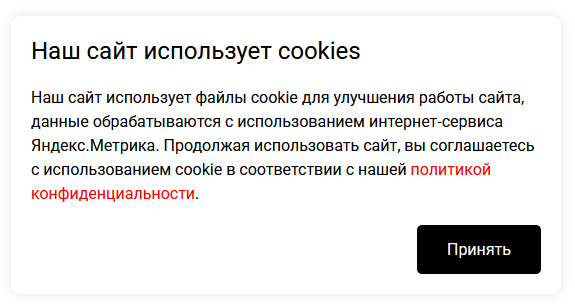

Простой скрипт для уведомления об использовании cookie и управления запуском аналитики после согласия пользователя.
Скачать скриптГотовое адаптивное окно с кнопкой подтверждения согласия.
Настройки передаются прямо в URL подключаемого скрипта.
Поддерживается обычный режим через disableYaCounter и строгий режим через HTML template.
Старое согласие cookieAccepted=true распознаётся и переносится в текущее состояние согласия.
Можно подключить собственный CSS через параметр style-url.
Настраиваются ссылки, срок cookie, имя cookie, классы кнопки и режим аналитики.

Пример стандартного модального окна Cookies Modal.
<script src="cookies.min.js" defer></script><script src="cookies.min.js?policy-url=https://example.com/privacy" defer></script><script src="cookies.min.js?agree-url=https://example.com/soglasie" defer></script><script src="cookies.min.js?icon=true&policy-url=https://example.com/privacy" defer></script><script src="cookies.min.js?btn-class=btn+btn-primary" defer></script><script src="cookies.min.js?style-url=https://example.com/cookies.css" defer></script><script src="cookies.min.js?days=30" defer></script><script src="cookies.min.js?days=0" defer></script><script src="cookies.min.js?cookie-name=cookie_consent" defer></script><script src="cookies.min.js?policy-url=/privacy&agree-url=/soglasie&days=30&icon=true&style-url=/css/cookies.css&btn-class=btn+btn-primary&cookie-name=cookie_consent" defer></script>defer. Так скрипт начнёт работу после разбора HTML и
document.body уже будет доступен.
metrika-mode=template.
Не подключайте один и тот же счётчик одновременно обоими способами.
Используется по умолчанию. Cookies Modal управляет найденными счётчиками через
window.disableYaCounter<ID>. Этот режим удобен для уже существующих
сайтов, где код Метрики подключён обычным способом.
<script src="cookies.min.js" defer></script>
<!-- Обычный код Яндекс.Метрики -->
<script>
(function(m,e,t,r,i,k,a){
m[i]=m[i]||function(){(m[i].a=m[i].a||[]).push(arguments)};
m[i].l=1*new Date();
k=e.createElement(t),a=e.getElementsByTagName(t)[0],k.async=1,k.src=r,
a.parentNode.insertBefore(k,a)
})(window, document, 'script', 'https://mc.yandex.ru/metrika/tag.js', 'ym');
ym(12345678, 'init', {
clickmap: true,
trackLinks: true,
accurateTrackBounce: true
});
</script>
В режиме template код аналитики находится внутри HTML
<template>. Содержимое template инертно: браузер не выполняет
находящиеся внутри него скрипты и не загружает Метрику до получения согласия.
<template data-cookie-consent="analytics">
<script>
(function(m,e,t,r,i,k,a){
m[i]=m[i]||function(){(m[i].a=m[i].a||[]).push(arguments)};
m[i].l=1*new Date();
for (var j = 0; j < document.scripts.length; j++) {
if (document.scripts[j].src === r) return;
}
k=e.createElement(t),a=e.getElementsByTagName(t)[0],k.async=1,k.src=r,
a.parentNode.insertBefore(k,a)
})(window, document, 'script', 'https://mc.yandex.ru/metrika/tag.js', 'ym');
ym(12345678, 'init', {
clickmap: true,
webvisor: true,
trackLinks: true,
accurateTrackBounce: true
});
</script>
</template>
<script src="cookies.min.js?metrika-mode=template" defer></script><template data-cookie-consent="analytics"> не выполняется.
После нажатия кнопки согласия Cookies Modal активирует template и запускает
находящиеся в нём скрипты.
noscript-пиксель Метрики вне template:
иначе браузер без JavaScript сможет выполнить запрос независимо от состояния
согласия. Если он нужен, его использование должно отдельно соответствовать вашей
политике обработки данных.
Ранние версии Cookies Modal использовали cookie
cookieAccepted=true. Новая версия распознаёт это значение как уже
полученное согласие и записывает актуальную cookie
c_ok=true либо cookie, указанную через cookie-name.
Благодаря этому после обновления пользователь не получает повторное окно только
из-за смены имени cookie.
| Параметр | Описание | По умолчанию | Пример |
|---|---|---|---|
| policy-url | Ссылка на политику конфиденциальности | /politika | /privacy |
| agree-url | Ссылка на согласие на обработку персональных данных | /soglasie | /personal-data-consent |
| icon | Отображение иконки cookie | false | true |
| style-url | Ссылка на пользовательский CSS | Не задано | /css/cookies.css |
| btn-class | CSS-классы кнопки согласия | Не задано | btn+btn-primary |
| cookie-name | Имя cookie, в которой хранится согласие | c_ok | cookie_consent |
| days | Срок жизни cookie в днях. Значение 0 создаёт сессионную cookie | 365 | 30 |
| metrika-mode | Режим управления аналитикой. Значение template активирует только элементы template[data-cookie-consent="analytics"] после согласия | Стандартный режим | template |
Переменная должна быть объявлена до подключения cookies.min.js.
<script>
const textCookies = "Используем cookie. {politika target='_blank'}Политика конфиденциальности{/politika}. {soglasie target='_blank'}Согласие на обработку ПД{/soglasie}";
</script>
<script src="cookies.min.js" defer></script>policy-url, agree-url и style-url можно
использовать как абсолютные, так и относительные URL.
Последнее обновление: {{LAST_EDIT}}
Размер: {{FILE_SIZE}} KB (сжатый)
Совместимость: Все современные браузеры